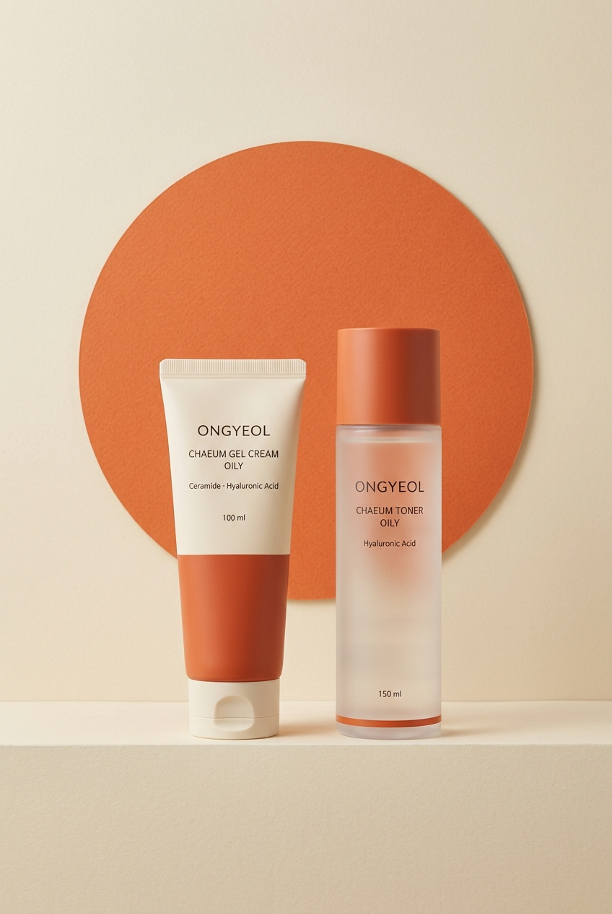
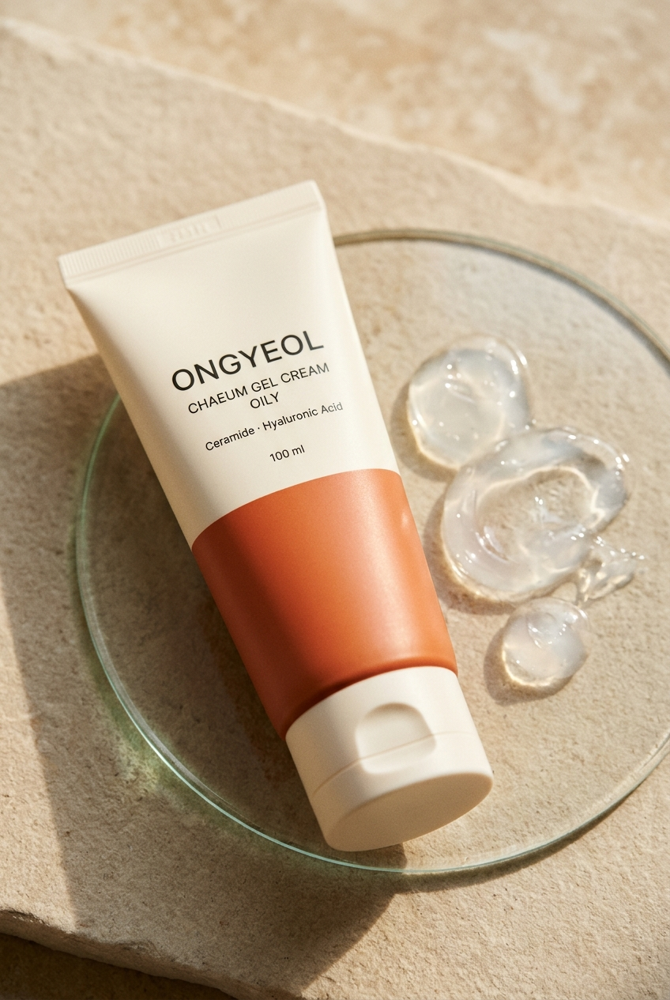
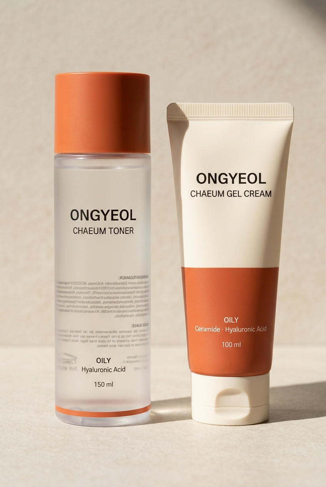

ONGYEOL · 봄 출시 듀오
온결 채움 듀오 OILY
채움 젤크림 OILY 100ml + 채움 토너 OILY 150ml

가볍게 채우고,
얇게 잠그는
마르지 않게, 무너지지 않게
※ 사용감 표현은 출시 전 사용감 평가로 확인한 범위에서만 표기합니다. (가상 시나리오)
이런 피부라면
- T존은 번들거리는데 볼은 당긴다
- 가벼운 젤만 쓰면 겨울엔 금방 건조해진다
- 크림을 바르면 무겁고 답답하다
채우고, 잠그는 장벽 — 가볍게
채움오일 없는 한 층 토너로
수분을 가볍게
수분을 가볍게
잠금젤크림의 가벼운 유분으로
얇게 마무리
얇게 마무리

건성 라인은 토너와 크림이 함께 잠그고, 지성 라인은 토너는 채움만 · 잠금은 젤크림이 맡습니다
두 가지를 함께 측정합니다
각질층 수분량채움 — 수분이 얼마나 머무는가수치는 시험 후 공개
경피수분손실(TEWL)잠금 — 수분이 얼마나 덜 빠져나가는가수치는 시험 후 공개
측정 예정 지표 · 시험기관 / 기간 / 대상 / 인원은 시험 후 각주로 표기합니다. (가상 시나리오)
제형과 성분

세라마이드 · 히알루론산
투명하고 가벼운 젤에 세라마이드와 히알루론산을 담았습니다. 동백 씨오일은 건성 라인에만 넣고, 지성 라인은 유분을 적게 설계했습니다.

사용법
- 토너 눈을 감고 10~20cm 거리에서 얼굴 전체에 두세 번 뿌려 주세요.
- 젤크림 적당량을 덜어 얇게 펴 바르고, 당김이 남는 곳에 한 번 더 덧발라 주세요.
번들거림이 신경 쓰이는 날엔
젤크림은 볼 위주로 얇게, T존은 손에 남은 양으로 가볍게 정리해 보세요.
제품 정보
| 구성 | 채움 젤크림 OILY 100ml · 채움 토너 OILY 150ml (한 층 스프레이 토너) |
|---|---|
| 주요 성분 | 세라마이드, 히알루론산 (토너는 오일층 없는 한 층) |
| 용기 | 젤크림: 불투명 튜브 / 토너: 반투명 PET + 미세분사 펌프 + 오버캡 (건성 토너와 같은 병) |
| 전성분 · 고시 | 가상 처방으로 미정 (가상 시나리오) |